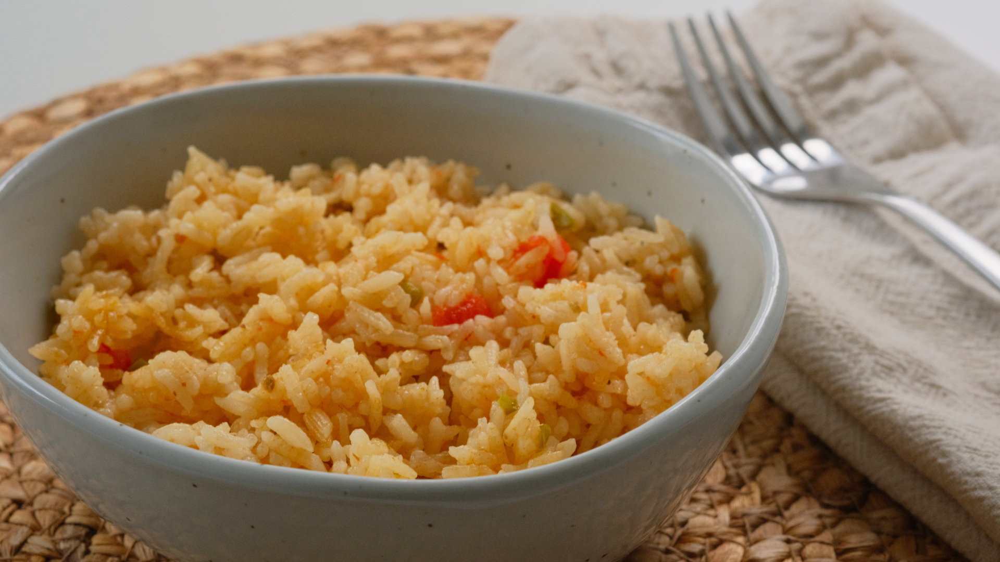

Why You'll Love This Recipe
This Arroz Frito is the rice I grew up eating! Unlike traditional fried rice, this version is fried first with onion, green pepper, tomato, and Better Than Bouillon, then cooked to fluffy perfection with steam. It’s a simple, flavorful, and comforting dish that brings back childhood memories. If you're looking for an easy way to elevate your everyday rice, this recipe is for you!
A link to the YouTube video: Arroz Frito Recipe - Fried Rice | The Rice I Grew Up Eating! 🍚❤️
Ingredients
- 1 cup long-grain white rice (200g)
- 1 small tomato (80g), diced
- 1/4 small onion (27g), diced
- 1/4 green bell pepper (26g), diced
- 1/2 tsp Better Than Bouillon (or half a bouillon cube)
- 1/4 tsp adobo seasoning
- 1 tsp kosher salt (adjust to taste)
- 1 tsp olive oil (4g)
- 8g butter
- 1.5 cups water (341g)
Instructions
Step 1: Rinse the Rice
Although not necessary, I always rinse my rice. It removes excess starch and helps achieve a fluffier texture. If you rinse it, remember that some enriched rice brands add powdered vitamins, which you might wash away.
- Place the rice in a shallow container.
- Add enough water to cover it and gently scrub the grains.
- Drain and repeat once more.
- Let it sit in a strainer to remove excess water while preparing the other ingredients.
Step 2: Prepare the Ingredients
- Dice the tomato, onion, and green pepper into small pieces.
- Measure out the seasonings, butter, and oil.
Step 3: Sauté the Ingredients
- Heat a pot over medium heat.
- Add olive oil and butter, letting the butter melt completely.
- Stir in the diced tomato, onion, and green pepper.
- Add salt, adobo, and Better Than Bouillon, mixing well.
Step 4: Fry the Rice
- Add the rinsed and drained rice to the pot.
- Stir well to coat the rice with the oil and seasonings.
- Let it toast lightly while stirring occasionally. This step enhances the flavor.
Step 5: Cook the Rice
- Once the rice is lightly fried and what remains of the tomato is just the peel, pour in the water.
- Scrape the bottom of the pot to lift any browned bits (adds extra flavor!).
- Bring to a simmer and cook uncovered for about 8 minutes, until most of the water evaporates.
- Once you hear a light sizzle, reduce the heat to very low.
- Mound the rice slightly in the center (this helps even cooking) and cover the pot.
- Let it steam for 9.5 minutes, then turn off the heat.
Step 6: Fluff and Serve
- Uncover the pot and check the texture. The rice should be fluffy and separate easily.
- Remove from the heat and let it rest uncovered for a few minutes to release excess steam.
- Serve warm and enjoy!
Serving Suggestions
This arroz frito is delicious on its own, but it pairs wonderfully with:
- Black bean soup (I made some with boneless short ribs, and it was perfect for chilly days!)
- Grilled meats or roasted vegetables